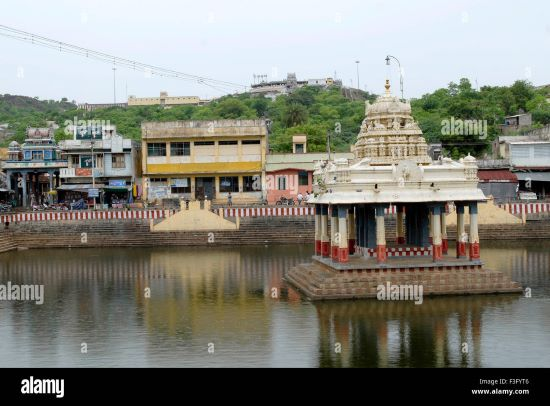

VELLORE
POIGAI

Poigai refers to a well-known historical term, particularly in the context of South Indian culture and literature. In the Tamil tradition, "Poigai" is associated with a specific type of natural water body or pond, often linked to sacred or mythological importance. These bodies of water have been integral to the development of ancient civilizations, particularly for agricultural, cultural, and religious practices. Many Poigais were constructed as reservoirs to store and manage rainwater, contributing to irrigation systems and supporting agriculture in regions with fluctuating rainfall patterns.
In Tamil literature, Poigai is also the name of one of the Three Sangam Poets, known as one of the "Azhwars," who were revered for their devotional poetry dedicated to Lord Vishnu. Poigai Azhwar, one of the 12 Alwars, composed a set of hymns expressing deep devotion to Lord Vishnu, and his works are considered an important part of the Tamil Vaishnavite tradition. His hymns, often found in the Nalayira Divya Prabandham, highlight the poet's intense spiritual connection and devotion, influencing the devotional practices of the time and contributing to the spread of Vaishnavism.
Today, the term "Poigai" is still used to refer to certain ponds and water bodies, some of which hold cultural and religious significance. In modern times, many of these ancient Poigais are part of heritage conservation efforts, as they represent the ingenuity of early water management systems and their central role in sustaining communities. In some cases, Poigais have been revitalized to address contemporary water needs, such as providing water for agriculture and supporting local ecosystems